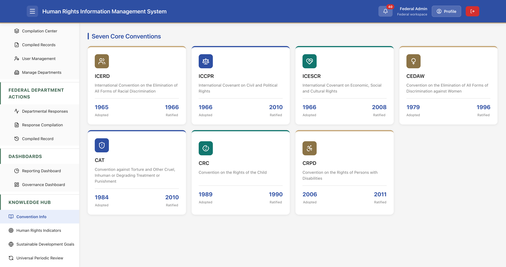
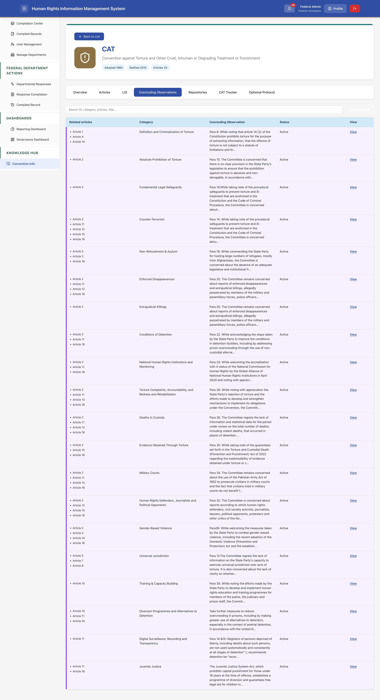
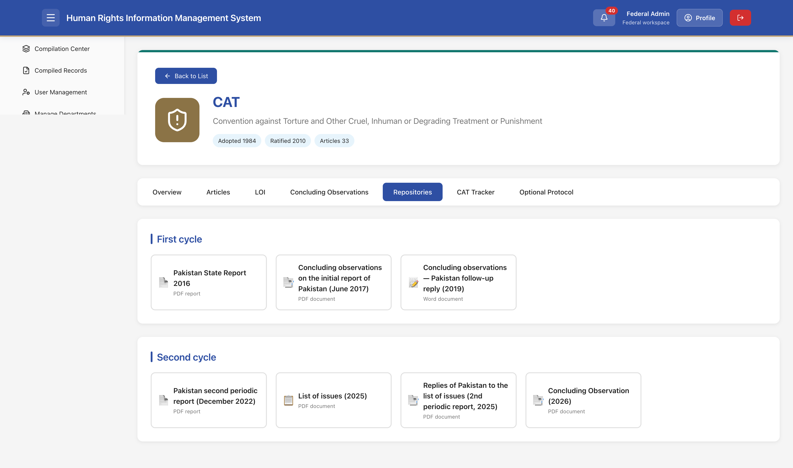

Human Rights Information
Management System
Regional / Provincial User Manual
1. Introduction – Regional Workspace
This manual covers the Regional (Provincial) and Department-level workspaces of HRIMS. Provincial Administrators (e.g., Punjab Admin) receive federal requests, distribute them to provincial departments, review departmental submissions, compile a consolidated provincial response, and submit it to the Federal level.
Department users (e.g., Punjab Police) receive assigned tasks, enter quantitative and qualitative indicator data (with disaggregation by gender, age, religion, disability), and submit their responses back to the Provincial Admin.
1.1 Key Roles
Provincial / Region Admin
Manages incoming federal requests, assigns work to departments, reviews responses, compiles the provincial consolidated response, and tracks status with Federal.
Department User
Responds to assigned tasks with indicator data and narratives; views own submission history.
1.2 High-Level Regional Workflow
- Federal creates and sends a request → appears under Received Requests for the province.
- Provincial Admin opens the request and Assigns selected indicators to one or more departments.
- Departments complete quantitative/qualitative forms and submit.
- Provincial Admin reviews departmental responses (accept / request modification).
- Provincial Admin compiles accepted department data into a single regional response and submits it to Federal.
- Federal reviews the regional response (Accept / Revision). Status is visible under Compiled and Submitted.
2. Provincial Home Dashboard

After login as a Provincial Admin, the Home screen provides a province-scoped overview.
2.1 Summary Cards
- Active Requests – Count of HR requests marked active for the province (e.g., 42).
- Accepted Rate – Percentage of accepted department responses vs total tasks (e.g., 64%).
- Needs Attention – Items requiring action (department responses or compilations needing revision).
2.2 Recent Requests Received
List of recent federal requests scoped to the province, with title, due date, and status badge (Active). “View All” opens the full Received Requests list.
2.3 Performance Overview & Navigation
Request Status Distribution donut, New Requests trend line, and quick counters (Pending, Under Review, Revision, Accepted). Left navigation includes Province Actions, Dashboards, and Knowledge Hub.
3. Received Requests

Lists all federal requests assigned to the province.
3.1 Status Summary Cards
Pending, Clarifying, Answered, Distributed, Processing, Delivered.
3.2 Filters, Export & Table
- Search by ID, title, convention, date; Status filter; Reset filters; Export Excel.
- Columns: Request ID, Title, Convention, Date, Status (Delivered / Processing), Actions.
Scope is shown at the bottom (e.g., Scope: Punjab).
4. Opening a Received Request & Assigning to Departments

Clicking a request opens its full details and the assignment interface.
4.1 Request Header & Content
- Title, Reporting type badge, Status, Request ID, Due date, Assigned Regions.
- Full Convention & Concluding Observations / List of Issues text and category.
- Relevant Articles with treaty text and Indicators for the request.
4.2 Assign to Departments
Expandable list of provincial departments (Home Department, Punjab Police, Emergency and Environment, Infrastructure and Services, Religious and Cultural Affairs, Economic and Labour, Development and Planning, Health and Population, Education, Human Rights and Governance, Social Welfare and Protection, Justice and Law Enforcement, etc.).
- Open a department to select the specific indicators it should respond to.
- Leave a department empty to skip it.
- Optional comments/instructions for departments.
- Assign selected departments distributes the work.
5. Departmental Responses (Provincial Review)

After departments submit, the Provincial Admin sees all departmental tasks for the province.
Metrics & Table
- Total Tasks, Pending, Under Review, Revision, Accepted.
- Columns: Task ID, Request, Department, Workflow status, Assigned date, Submitted date, Actions.
6. Viewing a Departmental Response

Shows department name (e.g., Punjab Police), status, task ID, and linked request. Quantitative data includes year totals, Grand Total, and Gender / Age / Religion / PWDs disaggregation tables.
Actions: Notes to department, Request modification, Back to list.
7. Response Compilation (Provincial)

Provincial Admin selects a request and builds the consolidated regional response from departmental submissions.
7.1 Progress Cards
Open for Compilation / Already Compiled; Departments Distributed, Pending Submission, Pending Regional Review, Resubmission Requested, Accepted by Region.
7.2 Compilation Form
- Select request ID; check departments to include (Select all / Clear all).
- View quantitative and qualitative data from each selected department.
- Optional compiled response narrative.
- Submit compiled response – sends the provincial consolidated response to Federal.
8. Compiled and Submitted

History of all regional compilations submitted by the province to Federal. Metrics: Total Compilations, Under Review, Accepted, Revision. Table columns: Response ID, Request, Title, Date, Status, Actions. Export Excel available.
9. Viewing a Regional Compilation

Full provincial compilation for a given request, including the quantitative data that was submitted (gender/age disaggregations, etc.). Status badge indicates Federal review outcome.
10. Department Workspace – Home

Department users see a focused workspace with Open Tasks, Submitted Rate, Needs Attention cards, Recent Tasks list, and Performance Overview charts.
Department Navigation
- Assigned Tasks
- Submission History
- Indicator-wise Data
- Knowledge Hub
11. Department – Assigned Tasks

All tasks assigned to this department. Metrics: Total Tasks, Pending, Under Review, Revision, Accepted. Table: ID, Request, Region, Department, Status, Assigned date, Actions.
12. Responding to an Assigned Task

The core data-entry screen for department users. For each assigned indicator:
- Year totals (multi-year if applicable) with ON/OFF toggles to include or mark N/A.
- Gender Disaggregate – Male, Female, Transgender, Unaccounted, Total (per year).
- Age Disaggregate – Under 18, 18-60, Above 60, Unaccounted, Total.
- Religion Disaggregate – Muslim, Christianity, Hindu, Sikh, Ahmadiyya, Others, Unaccounted, Total.
- PWDs Disaggregated – Hearing, Lower/Upper Limb, Mental, Speech, Visual Full/Partial, Other, etc.
Multiple indicators can appear on the same form. Save / Submit finalizes the departmental response.
13. Department – Submission History

Lists all tasks this department has already submitted, with current workflow status.

Opening a submitted item shows the data that was sent (read-only quantitative tables and any narrative).
14. Reporting Dashboard

Filters by Convention, Article, LOI/CO, Categories, Indicator, Year. Summary cards, Records Status bar chart, LOI/CO donut, Records by Region, Top Categories and Indicators. Save to PDF available.
15. Governance Dashboard

Indicator trend charts (line, bar, pie, multi-dimension) for long-term monitoring (custodial deaths, prosecutions, legal aid, etc.). Select at least one indicator to enable custom trend charts.
16. Knowledge Hub
The Knowledge Hub is the reference library of HRIMS. It gives every user — Federal Admin, Provincial Admin, and Department users — a single place to consult the human rights treaties Pakistan has ratified, the exact text of their articles, the Lists of Issues and Concluding Observations issued by the treaty bodies, the official state reports and replies, and quantitative trackers that support evidence-based reporting.
Content is identical across Federal, Provincial, and Department workspaces. It is read-only for ordinary users; only a Super Administrator can add or edit convention material.
16.1 Purpose & Scope
- Provide authoritative treaty texts and Pakistan’s ratification status.
- Map Lists of Issues (LOI) and Concluding Observations to specific articles and thematic categories.
- Store official reporting-cycle documents (State reports, LOIs, replies, Concluding Observations).
- Offer quantitative trackers (e.g. CAT Compliance Master Tracker) that can be cross-checked against data entered in HRIMS.
- Support training and capacity-building by making the legal framework accessible inside the same system used for reporting.
16.2 Seven Core Conventions

The landing page of the Knowledge Hub displays the seven core UN human rights treaties that Pakistan has ratified. Each card shows:
- ICERD – International Convention on the Elimination of All Forms of Racial Discrimination (Adopted 1965, Ratified 1966)
- ICCPR – International Covenant on Civil and Political Rights (Adopted 1966, Ratified 2010)
- ICESCR – International Covenant on Economic, Social and Cultural Rights (Adopted 1966, Ratified 2008)
- CEDAW – Convention on the Elimination of All Forms of Discrimination against Women (Adopted 1979, Ratified 1996)
- CAT – Convention against Torture and Other Cruel, Inhuman or Degrading Treatment or Punishment (Adopted 1984, Ratified 2010)
- CRC – Convention on the Rights of the Child (Adopted 1989, Ratified 1990)
- CRPD – Convention on the Rights of Persons with Disabilities (Adopted 2006, Ratified 2011)
Clicking any convention card opens its detailed pages (Overview, Articles, LOI, Concluding Observations, Repositories, Tracker, Optional Protocol).
16.3 CAT – Convention Overview

The Overview tab explains the role of the Committee against Torture (a body of 10 independent experts), the State reporting cycle (initial report one year after accession, then every four years), the three additional monitoring mechanisms (individual communications, inquiries, inter-state complaints), the Optional Protocol and the Subcommittee on Prevention of Torture (SPT), the Committee’s session schedule, and the issuance of General Comments. It also provides a short narrative on the impact of the Convention and the continuing challenge of eradicating torture.
16.4 CAT – Articles

Lists all 33 articles of the Convention. Expanding an article reveals:
- The full legal text of the article.
- Related Lists of Issues that reference that article.
- Linked Concluding Observations paragraphs.
This is the primary place to confirm the exact legal obligation when mapping indicators or drafting a response.
16.5 CAT – List of Issues (LOI)

A searchable table of every List of Issues item linked to CAT. Columns include Related articles, Category (e.g. Criminalization of Torture, Fundamental Legal Safeguards, Gender-Based Violence, Non-Refoulement & Asylum, Training & Capacity Building, Prison Management, Healthcare, Redress, etc.), the LOI title itself, Status (Active), and a View action. Provincial and Federal users rely on this list when selecting which LOI a new request will address.
16.6 CAT – Concluding Observations

Tabular view of the Committee’s Concluding Observations, grouped by thematic category (Absolute Prohibition of Torture, Counter-Terrorism, Enforced Disappearances, Deaths in Custody, Gender-Based Violence, Training & Capacity Building, etc.). Each row shows related articles, the observation text (or a summary), status, and a View link for the full paragraph. These observations form the basis of many federal information requests.
16.7 CAT – Repositories

Organises official documents by reporting cycle:
- First cycle: Pakistan State Report 2016, Concluding observations (June 2017), Follow-up reply (2019).
- Second cycle: Pakistan second periodic report (December 2022), List of issues (2025), Replies of Pakistan to the list of issues (2025), Concluding Observation (2026).
Documents are available for download as PDF or Word files. Users should consult these when preparing or reviewing responses so that new data is consistent with previously submitted information.
16.8 CAT Tracker (Quantitative)

A set of flagship summary tables and graphs that present historical quantitative data relevant to CAT implementation, including:
- Torture Act Prosecutions (2022 Act), 2019–2025 – Cases Sent, Convictions, Acquittals, Pending.
- Enforced Disappearances – Commission of Inquiry, 2019–2025 – Cases Received vs Disposed.
- Custodial Deaths by Province, 2019–2024.
- Prison Occupancy by Province (snapshot).
- Gender-Based Violence: Cases Registered vs Convictions, 2022–2025.
These figures can be cross-checked against the data that departments and provinces enter into HRIMS, helping to identify gaps or inconsistencies before national compilation.
16.9 CAT – Optional Protocol

Currently shows a placeholder: content can be added by a Super Administrator from Super Admin → Conventions. When populated, this tab will describe the Optional Protocol to CAT and the mandate of the Subcommittee on Prevention of Torture (SPT).
16.10 How to Use the Knowledge Hub in Daily Work
- Before creating a request (Federal): Open the relevant LOI or Concluding Observation to confirm the exact text and linked articles/indicators.
- Before assigning indicators (Provincial): Check which departments are typically responsible for the thematic category of the LOI.
- While entering data (Department): Refer to the article text or previous cycle figures in the Tracker if definitions or baselines are unclear.
- During review / compilation: Compare newly submitted numbers with the historical Tracker and with prior State report figures stored in Repositories.
17. End-to-End Regional Workflow
- Federal Admin creates a request and assigns it to one or more provinces.
- Provincial Admin sees it under Received Requests, opens it, and Assigns selected indicators to relevant departments.
- Department users complete the quantitative/qualitative forms on their Assigned Tasks and Submit.
- Provincial Admin reviews submissions under Departmental Responses (Accept or Request modification).
- Provincial Admin goes to Response Compilation, selects the request and accepted departments, optionally writes a summary, and Submits the compiled regional response.
- The compilation appears under Compiled and Submitted; Federal reviews it (Accepted / Under Review / Revision).
- Status updates are visible to the province; revisions may require re-compilation.
18. Tips for Regional & Department Users
- Always check due dates on Received Requests and Assigned Tasks.
- When assigning, only select indicators that the department can realistically report on.
- Use the ON/OFF toggles carefully on quantitative forms – mark N/A rather than leaving zeros if data is not applicable.
- Request modification early if data quality issues are found; this avoids delays at Federal review.
- Keep the compiled narrative concise and focused on the indicators and any challenges.
- Use Knowledge Hub LOI / Concluding Observations pages when clarifying indicator definitions.